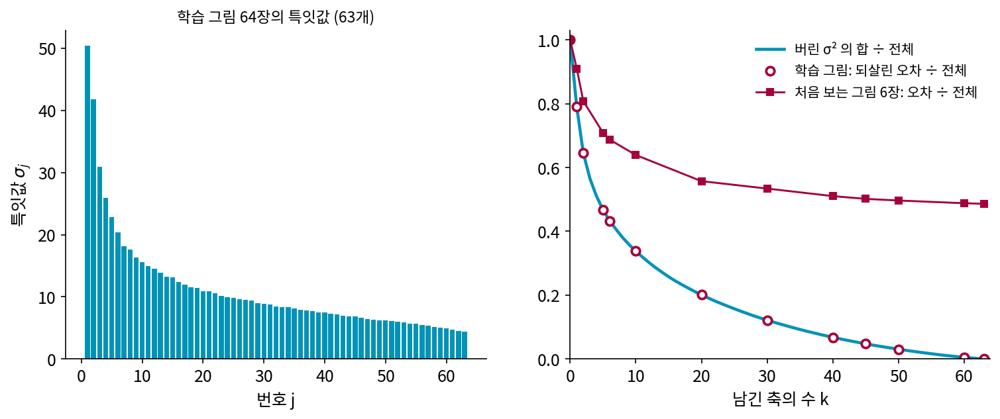
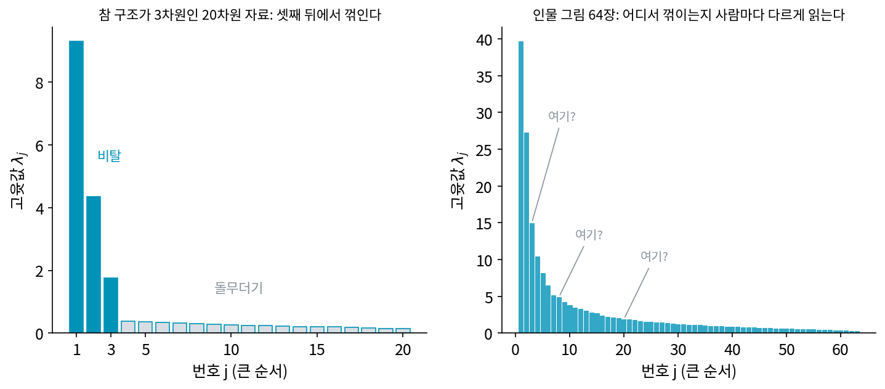
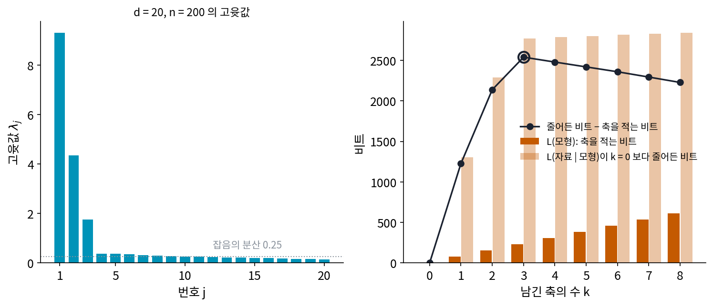
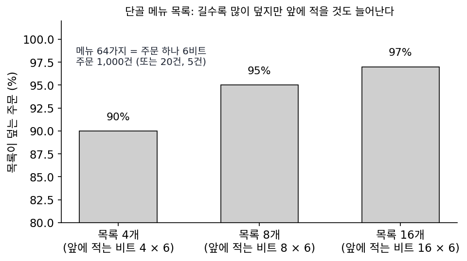
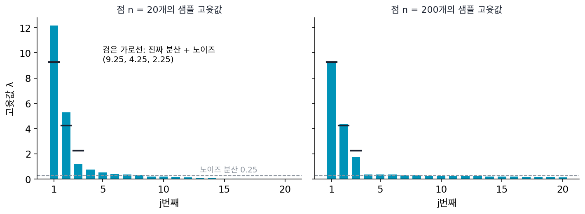
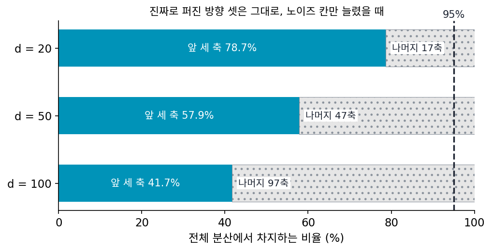

몇 개를 남기나: 특잇값의 꼬리와 두 부분 코드
인물 그림에서 축을 늘릴수록 학습 그림의 오차는 버린 특잇값의 제곱합만큼씩 줄어, 63개를 다 쓰면 0이 된다. 그렇다면 다 남기면 될까? 처음 보는 그림 6장의 오차를 함께 그려 보면 이야기가 달라서, 축 5개에서 0.709, 20개에서 0.557로 줄다가 그 뒤로는 거의 줄지 않아 63개를 다 써도 0.486이다. 학습 그림만 보면 축은 많을수록 좋고, 처음 보는 그림을 보면 어디선가 멈춰야 한다. 실제로 PCA를 쓰는 사람들은 「분산의 95%를 남긴다」거나 「특잇값이 뚝 떨어지는 곳에서 자른다」 같은 경험 규칙을 쓴다. 이 규칙들은 무엇에 기대고 있고, 더 근거 있는 기준은 없을까?

역사: 비탈 아래의 돌무더기
1966년 심리학자 커텔(Raymond B. Cattell)은 「요인 수를 정하는 돌무더기 검사(The Scree Test for the Number of Factors)」를 냈다. 고윳값을 큰 순서로 막대처럼 그리면, 앞의 몇 개는 가파르게 떨어지고 그 뒤는 낮고 평평하게 늘어선다. 영어 scree는 가파른 산비탈 아래에 쌓인 돌무더기를 가리키는 지질학 낱말이다. 돌무더기는 의미 있는 구조가 아니라 부스러기라고 보아, 커텔은 비탈이 끝나고 돌무더기가 시작되는 곳에서 자르자고 했다. 이 검사는 지금도 널리 쓰이지만, 꺾이는 곳이 뚜렷하지 않거나 여러 곳이면 사람마다 다르게 읽는다는 비판을 받는다.

그 뒤로 눈대중 대신 셈으로 정하려는 시도가 이어졌다. 민카(Thomas Minka)는 2000년 NIPS(신경 정보 처리 학회)에 낸 「PCA의 차원을 저절로 고르기(Automatic Choice of Dimensionality for PCA)」에서 PCA를 「자료가 낮은 차원의 면 근처에 정규분포로 퍼져 있다」는 확률 모델로 읽었다. 그리고 축 수가 다른 모델들 가운데 베이즈 방법으로 하나를 골랐는데, scikit-learn의 PCA(n_components='mle')가 이 방법이다. 이 책은 같은 물음을 코드 길이로 셈한다.
꺾이는 곳을 눈으로 고른다니 좀 허술해 보여요. 기준을 정해서 계산하면 되잖아요.

어떤 기준이요? 1966년의 커텔이 쓸 수 있던 것 가운데서 골라 봐요.

음… 축 하나를 더할 때 얻는 것과 치르는 것을 비교하면… 아, 얻는 것과 치르는 것을 무슨 단위로 재죠?

모델과 자료를 같은 비트로 재어 더하자는 최소 기술 길이는 리사넨이 1978년에 냈어요. 커텔의 논문보다 12년 뒤예요. 민카처럼 PCA를 확률 모델로 읽는 길도 그 뒤에 열렸고요.
그러면 커텔에게는 「축이 몇 개냐」를 셈으로 바꿀 잣대가 아직 없었던 거네요. 눈대중이 그때 쓸 수 있던 전부였고요.

돌무더기를 셈으로 가르려면, 축 하나를 적는 비트와 그 축이 아껴 주는 비트를 각각 어떻게 세야 해요?
축 하나를 적는 값
기준이 맞는 답을 내는지 확인할 수 있도록, 참 구조를 알고 있는 자료로 시작하자. 겉보기 차원 d = 20인 점 n = 200개가 있는데, 진짜로 퍼진 방향은 셋(분산 9, 4, 2)이고 거기에 모든 방향으로 분산 0.25의 노이즈를 더했다(씨앗 0). 샘플의 고윳값은 9.30, 4.34, 1.75 뒤에 0.37부터 0.14까지 열일곱 개가 낮게 늘어선다. 셋째와 넷째 사이에 비탈과 돌무더기의 경계가 보인다.
이 자료를 비트로 적는다. 모델을 적는 비트와 그 모델로 자료를 적는 비트를 더한 두 부분 코드에서, 모델은 남긴 축 k개이고 자료는 점마다의 좌표다. 실수는 정밀도 δ까지만 적는다고 하자. 분산이 λ인 정규분포를 믿고 실수 하나를 δ 정밀도로 적으면, 폭 δ짜리 눈금 칸에 들어갈 확률은 대략 밀도 × δ이므로 코드 길이 −log₂(확률)은 평균 ½ log₂(2πe λ/δ²)비트다. 분산이 큰 좌표일수록 비트가 많이 든다. 그래서 남긴 축 위의 좌표는 그 축의 고윳값 λⱼ로, 남은 d − k칸은 버린 고윳값의 평균 s²로 적는다. 축 하나는 숫자 d개인데, 숫자 하나를 얼마나 정밀하게 적어야 하느냐에는 리사넨이 제안한 근사를 쓴다. 점 n개로 추정한 값은 어차피 1/√n 정도는 흔들리므로 그 정밀도면 충분하고, 그러면 숫자 하나에 ½ log₂ n비트가 든다.
평균 그림처럼 어느 k에서나 똑같이 드는 비트는 셈에서 빼고, k를 0부터 늘리면 이렇게 된다.
| 남긴 축 k | L(모델) | L(자료∣모델) | 합 | 축 하나를 더해 줄어든 합 |
|---|---|---|---|---|
| 0 | 0 | 34,700 | 34,700 | (없음) |
| 1 | 76 | 33,396 | 33,473 | 1,227 |
| 2 | 153 | 32,408 | 32,561 | 912 |
| 3 | 229 | 31,930 | 32,159 | 402 |
| 4 | 306 | 31,914 | 32,219 | −60 |
| 5 | 382 | 31,897 | 32,279 | −60 |
축 하나를 적는 값은 d · ½ log₂ n = 20 × 3.82 = 76.4비트로 일정하다. 셋째 축까지는 좌표를 적는 비트가 그보다 훨씬 많이 줄지만, 넷째 축부터는 16비트쯤만 줄어 축 값을 치르지 못한다. 합이 가장 짧은 k는 3, 진짜로 퍼진 방향의 수다. 이렇게 두 부분 코드의 합이 가장 짧아지는 축의 수를 고르는 기준을 두 부분 코드로 고른 축 수 (축 하나가 제값을 치를 때만 남기기)라 부르자. 최소 기술 길이의 생각을 축 수 고르기에 쓴 것이다. 넷째부터의 고윳값이 0.37, 0.36, …으로 0이 아닌데도 버리는 것은, 그 축들이 담은 분산이 축을 적는 비트를 치를 만큼 크지 않기 때문이다. 돌무더기 검사가 눈으로 가르던 「부스러기」를 여기서는 비트로 가른다.

두 부분 코드의 셈을 인물 그림 64장에 하면(δ = 1/255, 그림 칸 하나의 밝기 눈금) 축 하나의 값이 4,096 × ½ log₂ 64 = 12,288비트로 아주 비싸서, 합이 가장 짧은 축 수는 6이다. 축 6개면 처음 보는 그림의 오차는 0.687로, 63개를 다 쓴 0.486보다 크다. 두 부분 코드가 재는 것은 「이 64장을 가장 짧게 적는 법」이지 처음 보는 그림의 오차가 아니다. 그림이 64장뿐이면 축 하나를 그만큼 정밀하게 배울 근거가 모자라다는 뜻으로 읽을 수 있다.
ML에서: 남길 축의 수를 정하는 설정값
PCA를 전처리로 쓸 때 남길 축의 수(n_components)는 사람이 정하는 설정값이다. scikit-learn은 정수 대신 0과 1 사이의 수를 주면 분산의 그만큼을 담을 때까지 축을 남기고, 'mle'를 주면 민카의 방법으로 고른다. 축의 수가 적으면 뒤의 모델이 받는 정보가 모자라고, 많으면 노이즈까지 학습 자료에 맞추게 된다. 「분산의 95%」라는 경험 규칙이 위의 자료에서 몇 개를 고르는지는 아래 문제 9에서 본다.
문제 7. 단골 메뉴 목록
카페 주문 1,000건을 기록하는데, 메뉴는 64가지라 주문 하나를 그대로 적으면 6비트다. 자주 나오는 메뉴 목록을 기록 맨 앞에 적어 두면(메뉴 하나에 6비트), 주문마다 「목록에 있음/없음」 1비트를 붙이고 목록 안의 번호나 원래 메뉴 번호를 적는다. 목록 4개는 주문의 90%를, 8개는 95%를, 16개는 97%를 덮는다. (가) 목록 없이, 목록 4개, 8개, 16개일 때 기록 전체는 몇 비트인가? (나) 주문이 20건뿐이면? 5건뿐이면?

목록이 길수록 더 많은 주문을 덮으니까 16개가 제일 좋겠죠.
목록 16개로 한번 계산해 봐요.
목록이 16 × 6 = 96비트, 주문 하나는 1비트 + (0.97 × 4비트 + 0.03 × 6비트) = 5.06비트, 1,000건이면 5,060 + 96 = 5,156비트예요. 목록 4개면 24비트 + 주문마다 1 + 0.9 × 2 + 0.1 × 6 = 3.4비트, 합 3,424비트. 8개면 4,198비트. 목록 없이는 6,000비트고요. 4개가 제일 짧아요. 목록을 늘리면 덮는 주문은 느는데 목록 안의 번호가 길어지네요.

(나)는 20건이면 목록 없이 120비트, 목록 4개는 24 + 68 = 92비트로 아직 목록이 이득이야. 5건이면 목록 없이 30비트, 목록 4개는 24 + 17 = 41비트라서 목록을 적는 게 손해고.
목록을 적는 24비트는 주문 수와 상관없이 한 번만 들죠. 주문이 적으면요?

그 24비트를 나눠 낼 주문이 적으니까 목록이 제값을 못 해요. PCA의 축도 그래요. 축 하나를 적는 비트는 한 번 들고, 이득은 점마다 생기니까 점이 적으면 축을 덜 남겨야 해요.

동아리 단톡방에 공지 양식을 만드는 것도 그렇네요. 공지가 일 년에 두 번이면 양식 만드는 수고가 더 커요.
문제 8. 점이 스무 개뿐이면
본문의 자료와 같은 방식(d = 20, 진짜 분산 9, 4, 2, 노이즈 0.25, 씨앗 0)으로 점을 n = 20개만 뽑았다. 샘플 고윳값은 12.17, 5.29, 1.17, 0.74, 0.53, …이다. (가) 위젯 2에서 n = 20으로 놓고 합이 가장 짧은 k를 읽어라. (나) 셋째 축을 더할 때 줄어드는 비트와 늘어나는 비트를 n = 20과 n = 200에서 견주어라. (다) 점이 많아지면 축 하나를 남기는 문턱은 어떻게 바뀌는가?

위젯에서 n = 20이면 k = 2에서 가장 짧아요. 진짜 방향은 셋인데 하나를 놓쳤어요. 기준이 틀린 거 아니에요?
(나)를 먼저 해 봐요. 셋째 축을 더하면 숫자가 어떻게 바뀌죠?
n = 20에서는 L(자료∣모델)이 38.8비트 줄고 L(모델)이 20 × ½ log₂ 20 = 43.2비트 늘어서 합이 4.5비트 길어져요. n = 200에서는 477.9비트 줄고 76.4비트 늘어서 401.5비트 짧아지고요.

줄어드는 비트는 점마다 생기니까 n에 비례해서 열 배쯤 커졌는데, 늘어나는 비트는 log₂ n에 비례하니까 두 배도 안 됐어. 그런데 n = 20에서 셋째 고윳값 1.17은 진짜 분산 2보다 꽤 작게 나왔네.

그래요. 점 스무 개로는 분산 2짜리 방향이 우연히 작게 보일 수 있고, 그 방향을 적어 둘 만큼의 증거가 아직 없는 거예요. 기준이 틀렸다기보다 「이 자료만으로는 셋째 방향을 믿을 근거가 모자라다」고 말하는 거죠. (다)는요?
이득은 n배로, 값은 log n배로 크니까 점이 많을수록 작은 고윳값의 축도 남길 만해져요. 문턱이 점점 내려가요.

그럼 점을 엄청 모으면 노이즈 축까지 다 남는 거 아니야?

음… 노이즈만 담은 축은 점이 아무리 많아도 고윳값이 노이즈 분산 근처라서 이득이 거의 0일 거야. 위젯에서 n = 5,000으로 해 볼게. 3에서 안 움직이네.
설문 응답이 스무 명뿐일 때 「세 번째 유형」까지 나누면 발표에서 교수님이 근거가 약하다고 하셨는데, 그게 이 계산이었네요.
문제 9. 분산의 95%를 남기면
본문의 자료(진짜로 퍼진 방향 셋, n = 200)에 아무 정보도 없는 노이즈 칸을 더해 겉보기 차원을 d = 20, 50, 100으로 늘렸다. 실무에서 흔히 쓰는
PCA(n_components=0.95)는 고윳값을 큰 순서로 더해 전체의 95%가 될 때까지 축을 남긴다. (가) 앞의 세 축이 담는 분산의 비율은 d마다 78.7%, 57.9%, 41.7%다. 95% 규칙과 두 부분 코드는 각각 몇 개를 고를까? (나) 인물 그림 64장에서는 95% 규칙이 몇 개를 고르는가?

95% 규칙은 d = 20이면 15개, 50이면 38개, 100이면 71개를 골라요. 두 부분 코드는 셋 다 3개요.
진짜 구조는 그대로인데 95% 규칙이 고른 수는 다섯 배 가까이 늘었네요. 왜 그럴까요?

노이즈 칸을 더할수록 전체 분산에서 노이즈가 차지하는 비율이 커지니까요. 95%를 채우려면 노이즈 축을 잔뜩 데려와야 해요.
95% 규칙은 노이즈가 얼마나 많은지와 상관없이 비율만 보니까, 노이즈가 전체의 절반이면 노이즈의 대부분을 「구조」로 남겨. 두 부분 코드는 축 하나하나가 자기 값을 치르는지를 보니까 노이즈 축은 몇 개를 더해도 안 남기고.
(나)는요?
인물 그림은 σ² 합의 95%까지 45개예요. 두 부분 코드는 6개였고요.
45개를 남기면 처음 보는 그림은 얼마나 잘 되살아나죠?
오차가 0.50이에요. 축을 그렇게 많이 남겼는데도요.
그럼 45개의 대부분은 그 64장에만 있는 무늬를 담은 거네요.
「분산 95%」는 시험 범위를 「교과서의 95%」로 정하는 거랑 비슷하네요. 교과서에 부록과 연습장이 잔뜩 붙어 있으면 그걸 다 외우게 돼요.